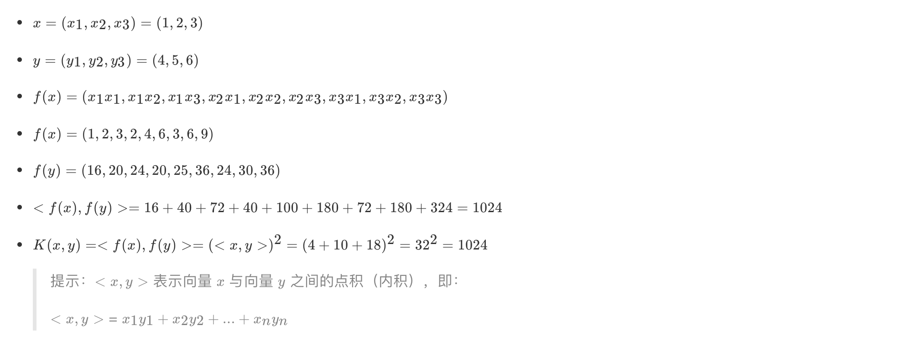

8.5 SVM的核方法
学习目标
- 知道SVM的核方法
- 了解常见的核函数
【SVM + 核函数】 具有极大威力。
核函数并不是SVM特有的，核函数可以和其他算法也进行结合，只是核函数与SVM结合的优势非常大。
1 什么是核函数
1.1 核函数概念
核函数，是将原始输入空间映射到新的特征空间，从而，使得原本线性不可分的样本可能在核空间可分。

下图所示的两类数据，分别分布为两个圆圈的形状，这样的数据本身就是线性不可分的，此时该如何把这两类数据分开呢?

- 假设X是输入空间，
- H是特征空间，
- 存在一个映射ϕ使得X中的点x能够计算得到H空间中的点h，
- 对于所有的X中的点都成立：

若x，z是X空间中的点，函数k(x,z)满足下述条件，那么都成立，则称k为核函数，而ϕ为映射函数：

1.2 核函数举例
1.2.1 核方法举例1


经过上面公式，具体变换过过程为：

1.2.2 核方法举例2
- 下面这张图位于第一、二象限内。我们关注红色的门，以及“北京四合院”这几个字和下面的紫色的字母。
- 我们把红色的门上的点看成是“+”数据，字母上的点看成是“-”数据，它们的横、纵坐标是两个特征。
- 显然，在这个二维空间内，“+”“-”两类数据不是线性可分的。


（前后轴为x轴，左右轴为y轴，上下轴为z轴）
- 绿色的平面可以完美地分割红色和紫色，两类数据在三维空间中变成线性可分的了。
三维中的这个判决边界，再映射回二维空间中：是一条双曲线，它不是线性的。
核函数的作用就是一个从低维空间到高维空间的映射，而这个映射可以把低维空间中线性不可分的两类点变成线性可分的。

2 常见核函数

1.多项核中，d=1时，退化为线性核；
2.高斯核亦称为RBF核。
- 线性核和多项式核：
- 这两种核的作用也是首先在属性空间中找到一些点，把这些点当做base，核函数的作用就是找与该点距离和角度满足某种关系的样本点。
- 当样本点与该点的夹角近乎垂直时，两个样本的欧式长度必须非常长才能保证满足线性核函数大于0；而当样本点与base点的方向相同时，长度就不必很长；而当方向相反时，核函数值就是负的，被判为反类。即，它在空间上划分出一个梭形，按照梭形来进行正反类划分。
- RBF核：
- 高斯核函数就是在属性空间中找到一些点，这些点可以是也可以不是样本点，把这些点当做base，以这些base为圆心向外扩展，扩展半径即为带宽，即可划分数据。
- 换句话说，在属性空间中找到一些超圆，用这些超圆来判定正反类。
Sigmoid核：
- 同样地是定义一些base，
- 核函数就是将线性核函数经过一个tanh函数进行处理，把值域限制在了-1到1上。
总之，都是在定义距离，大于该距离，判为正，小于该距离，判为负。至于选择哪一种核函数，要根据具体的样本分布情况来确定。
- 一般有如下指导规则：
- 1） 如果Feature的数量很大，甚至和样本数量差不多时，往往线性可分，这时选用LR或者线性核Linear；
- 2） 如果Feature的数量很小，样本数量正常，不算多也不算少，这时选用RBF核；
- 3） 如果Feature的数量很小，而样本的数量很大，这时手动添加一些Feature，使得线性可分，然后选用LR或者线性核Linear；
- 4） 多项式核一般很少使用，效率不高，结果也不优于RBF；
- 5） Linear核参数少，速度快；RBF核参数多，分类结果非常依赖于参数，需要交叉验证或网格搜索最佳参数，比较耗时；
- 6）应用最广的应该就是RBF核，无论是小样本还是大样本，高维还是低维等情况，RBF核函数均适用。
3 小结
- SVM的核方法
- 将原始输入空间映射到新的特征空间，从而，使得原本线性不可分的样本可能在核空间可分。
- 常见核函数
- 线性核
- 多项式核
- RBF核
- Sigmoid核